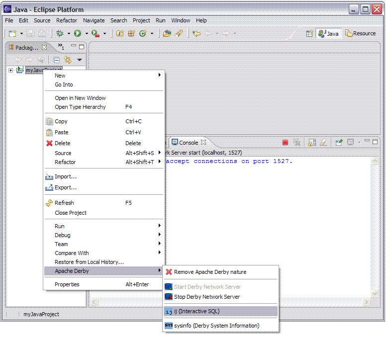
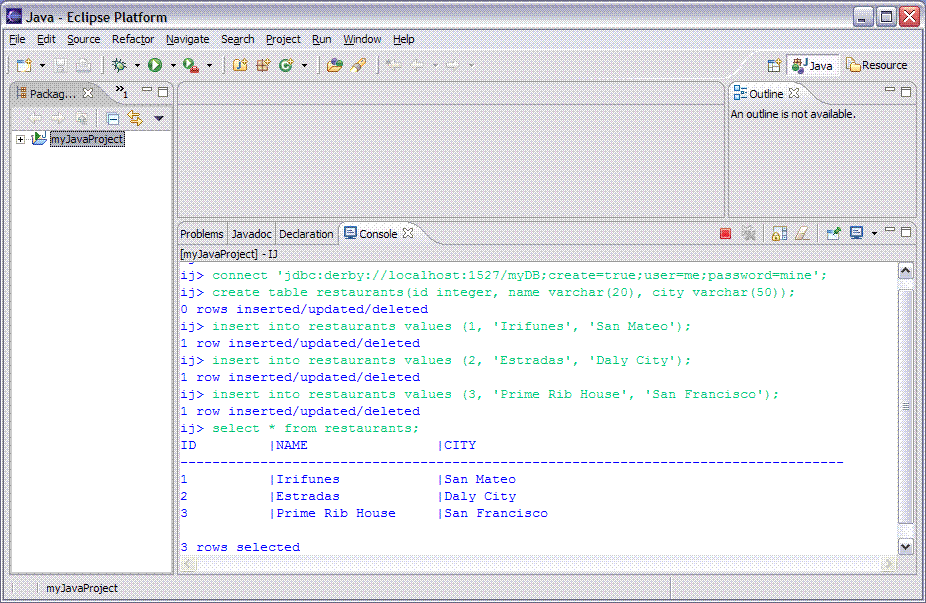

ij, the interactive SQL scripting tool provided with Derby, allows you to issue ad-hoc queries against a Derby database. Running ij from within Eclipse speeds application development by testing and running SQL statements prior to coding JDBC calls.

connect 'jdbc:derby://localhost:1527/myDB;create=true;user=me;password=mine';
create table restaurants(id integer, name varchar(20), city varchar(50)); insert into restaurants values (1, 'Irifunes', 'San Mateo'); insert into restaurants values (2, 'Estradas', 'Daly City'); insert into restaurants values (3, 'Prime Rib House', 'San Francisco'); select * from restaurants;
Sample output from our ij session which runs the sql commands listed above is shown below.

The database connection URL shown above is used to connect to the Derby Network Server. If you want to connect to the database using the Derby JDBC embedded driver the connection URL would look like jdbc:derby:myDB;create=true and the ij command would be this:
connect 'jdbc:derby:myDB;create=true';
For detailed information on the proper syntax to use for the Connection URL refer to the Derby Tools & Utility Guide. The section called Getting started with ij provides the necessary information to start using ij.